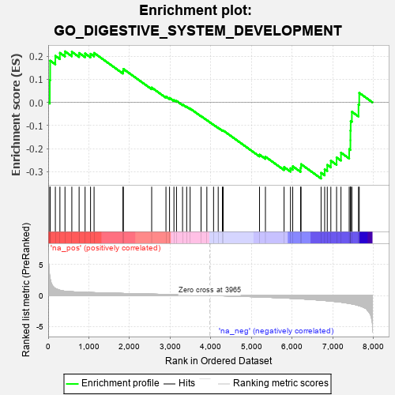
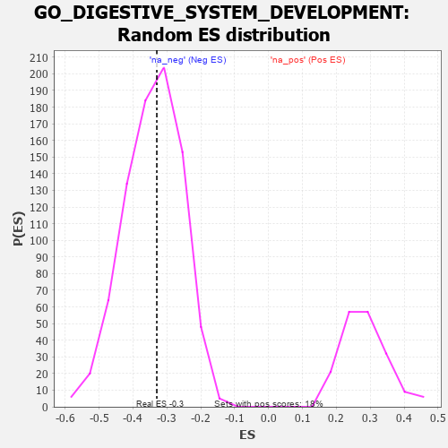

| | | Dataset | 7d |
| Phenotype | NoPhenotypeAvailable |
| Upregulated in class | na_neg |
| GeneSet | GO_DIGESTIVE_SYSTEM_DEVELOPMENT |
| Enrichment Score (ES) | -0.32964 |
| Normalized Enrichment Score (NES) | -0.96610296 |
| Nominal p-value | 0.5391198 |
| FDR q-value | 0.9049145 |
| FWER p-Value | 1.0 |
Table: GSEA Results Summary

Fig 1: Enrichment plot: GO_DIGESTIVE_SYSTEM_DEVELOPMENT
Profile of the Running ES Score & Positions of GeneSet Members on the Rank Ordered List
| PROBE | GENE SYMBOL | GENE_TITLE | RANK IN GENE LIST | RANK METRIC SCORE | RUNNING ES | CORE ENRICHMENT | | 1 | SIX2 | | | 40 | 3.152 | 0.0962 | No |
| 2 | TGFB3 | | | 49 | 2.654 | 0.1805 | No |
| 3 | FOXF1 | | | 176 | 1.136 | 0.2011 | No |
| 4 | SHOX2 | | | 288 | 0.842 | 0.2141 | No |
| 5 | ALX4 | | | 413 | 0.686 | 0.2205 | No |
| 6 | CCNB1 | | | 581 | 0.601 | 0.2188 | No |
| 7 | ZIC3 | | | 760 | 0.542 | 0.2137 | No |
| 8 | WLS | | | 907 | 0.505 | 0.2115 | No |
| 9 | YAP1 | | | 1041 | 0.475 | 0.2100 | No |
| 10 | SRC | | | 1128 | 0.459 | 0.2139 | No |
| 11 | GATA4 | | | 1837 | 0.330 | 0.1352 | No |
| 12 | TCF7 | | | 1848 | 0.328 | 0.1445 | No |
| 13 | SRP54 | | | 2544 | 0.220 | 0.0639 | No |
| 14 | FGFR2 | | | 2895 | 0.167 | 0.0251 | No |
| 15 | PCSK5 | | | 2983 | 0.152 | 0.0190 | No |
| 16 | TIGAR | | | 3091 | 0.138 | 0.0099 | No |
| 17 | SFRP5 | | | 3154 | 0.129 | 0.0063 | No |
| 18 | SMAD3 | | | 3303 | 0.105 | -0.0090 | No |
| 19 | YIPF6 | | | 3404 | 0.089 | -0.0188 | No |
| 20 | GLI1 | | | 3489 | 0.079 | -0.0269 | No |
| 21 | VPS52 | | | 3758 | 0.033 | -0.0596 | No |
| 22 | NIPBL | | | 3900 | 0.010 | -0.0771 | No |
| 23 | SFRP2 | | | 4065 | -0.018 | -0.0972 | No |
| 24 | PDX1 | | | 4179 | -0.038 | -0.1102 | No |
| 25 | WNT11 | | | 4282 | -0.056 | -0.1213 | No |
| 26 | TBX2 | | | 4303 | -0.060 | -0.1219 | No |
| 27 | SMO | | | 5195 | -0.247 | -0.2264 | No |
| 28 | TCF21 | | | 5340 | -0.283 | -0.2355 | No |
| 29 | ADA | | | 5798 | -0.405 | -0.2801 | No |
| 30 | PRDM1 | | | 5956 | -0.457 | -0.2852 | No |
| 31 | XBP1 | | | 6011 | -0.475 | -0.2768 | No |
| 32 | INSR | | | 6204 | -0.538 | -0.2837 | No |
| 33 | SMAD2 | | | 6216 | -0.541 | -0.2677 | No |
| 34 | EGFR | | | 6708 | -0.765 | -0.3051 | Yes |
| 35 | WDR19 | | | 6796 | -0.812 | -0.2899 | Yes |
| 36 | AHI1 | | | 6860 | -0.848 | -0.2707 | Yes |
| 37 | FAT4 | | | 6948 | -0.901 | -0.2527 | Yes |
| 38 | BBS7 | | | 7089 | -0.988 | -0.2386 | Yes |
| 39 | OVOL2 | | | 7197 | -1.068 | -0.2178 | Yes |
| 40 | CELA1 | | | 7399 | -1.265 | -0.2025 | Yes |
| 41 | KLF5 | | | 7429 | -1.304 | -0.1643 | Yes |
| 42 | OTC | | | 7430 | -1.305 | -0.1224 | Yes |
| 43 | SPDEF | | | 7436 | -1.313 | -0.0808 | Yes |
| 44 | NPY | | | 7465 | -1.356 | -0.0408 | Yes |
| 45 | PKD1 | | | 7628 | -1.611 | -0.0095 | Yes |
| 46 | PTF1A | | | 7646 | -1.637 | 0.0410 | Yes |
Table: GSEA details [plain text format]

Fig 2: GO_DIGESTIVE_SYSTEM_DEVELOPMENT: Random ES distribution
Gene set null distribution of ES for GO_DIGESTIVE_SYSTEM_DEVELOPMENT